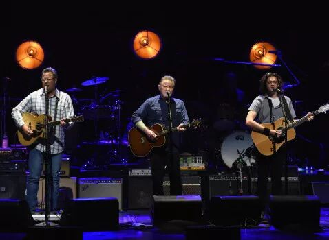
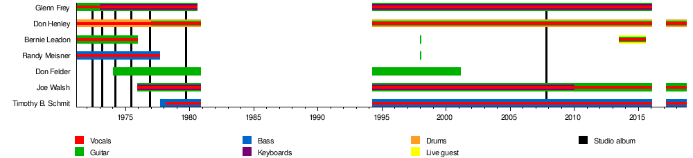
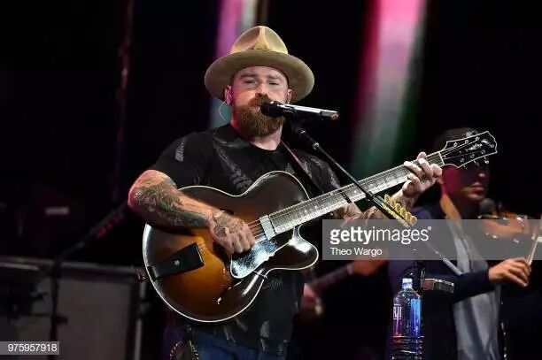

今天去听了Eagles的演唱会。演唱会很诡异地在下午的五点开始。本来我盘算着下午5点怎么着晚上9点总能结束了，回家正好写一篇文章。没想到5点开始的是暖场歌手的演出，整整进行了3个小时，一直到8点半Eagles演出才开始。到家的时候已经12点了，所以今天这篇文章就简短一点。
说起Eagles大家一般都会想到他们最有名的那首《Hotel California》，也一般都会听过那首歌。至于乐队成员长什么样子，至少我自己是没有见过。在暖场乐队演出的3个小时里面，我一直以为演出的就是Eagles。在网上搜到的照片虽然长得不太像，但是因为我买的是比较便宜的票，坐得很远，所以也不能确定是不是同一个人。

从网上找到的Eagles成员变迁
暖场乐队的演唱结束以后，很多人起身离开了座位，所以我以为散场了。由于暖场乐队没有演出Eagles的任何一首歌（其实我也就听过他们的两三首歌），令我感到非常疑惑。问了旁边的人才搞清楚什么情况。估计那个被问的兄弟也是很懵逼的，不知道这人连歌手长什么样都不知道，过来看什么演唱会。

暖场乐队Zac Brown
Eagles的演出相对于暖场乐队还是好非常多的。他们的前中半场的歌我都没听过，但是好多调子都似曾相识，似乎在陶喆，伍佰的歌里面曾经听到过类似的小片段，想来他们的歌对于之后的整个歌坛都是影响深远。最后的《Hotel California》和《Desperado》非常震撼，感觉光这两首歌就值回票价以及所有的等待。